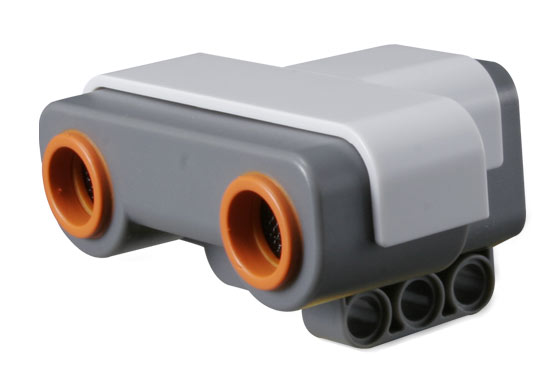

Senzorul cu ultrasunete
Prin intermediul senzorului cu ultrasunete robotul poate vedea si detecta obiecte. Cu ajutorul lui, robotul poate decide daca sa evite anumite obstacole, sa masoare distance si sa detecteze distante. Senzorul cu ultrasunete poate masura distante de pana la 255 cm, atat in cm cat si in inch. Modul de functionare: se determina distanta prin calcularea timpului care ii trebuie unei unde sonore de a lovi un obiect si de a se intoarce inapoi. Pentru orice nelamurire nu ezitati sa o intrebati pe doamna profesoara, sau sa accesati aici pentru mai mult suport.